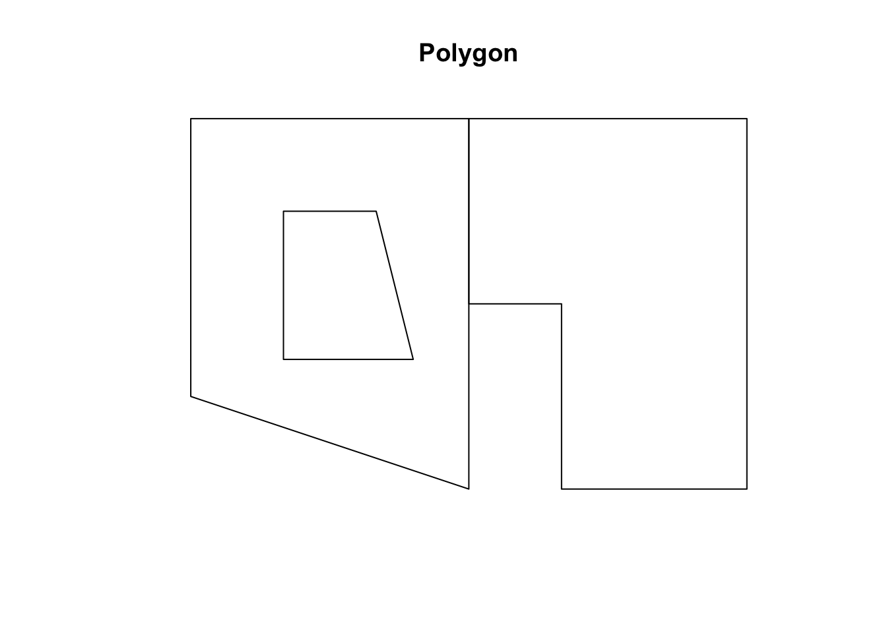
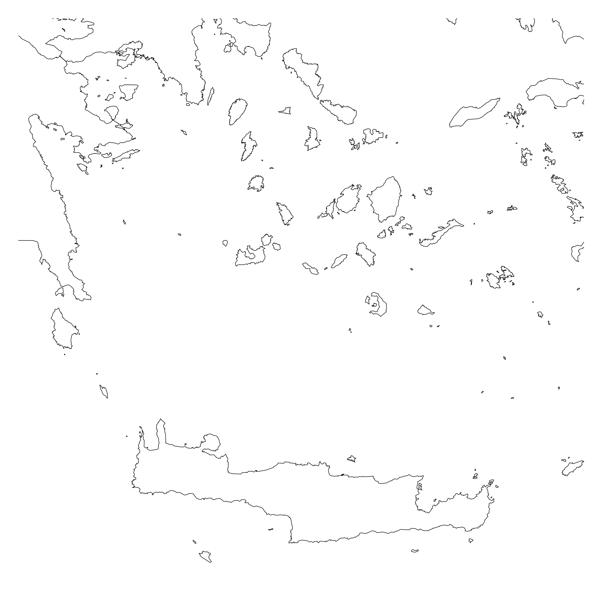
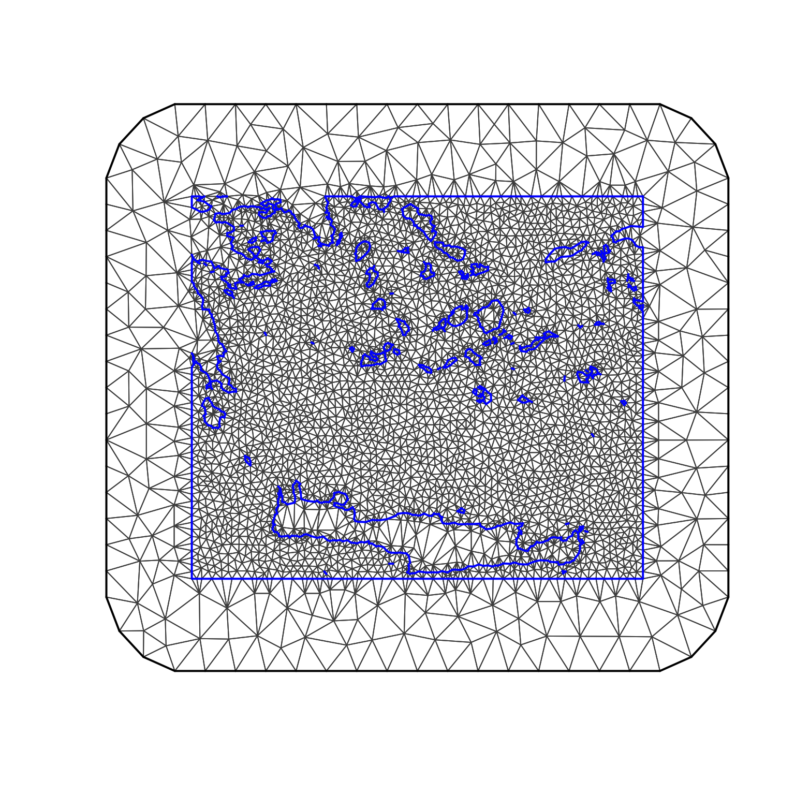

Polygons and Coastlines
Francesco Serafini
Runbing Zheng
Haakon Bakka
updated XX March 2018
1 About
In this page we explain how to build polygons with the INLA and sp packages. This functionality is very useful in particular when we are dealing with physical barriers, which are important in statistical models on maps (spatial statistics). On this page we show several practical examples of how to deal with polygons. After that we show how to create polygons representing a geographical area of interest, how to build a mesh on this area, and how to get some nice plot from Google Maps.
2 Polygons
2.1 Physical Boundaries
In many real spatial model we have to deal with areas with physical boundaries. Let us think about data coming from sensors placed in the sea recording a signal which doesn’t propagate on the earth. In this situation any island represents a physical boundary that we have to take into account when modeling. Pay attention to the boundary effect (link mesh page: https://haakonbakkagit.github.io/btopic126.html#21_what_is_mesh_and_why_we_need_it) On the other hand we could think of the opposite situation: We are interested in what happens on land and do not care about the sea. This is a pretty common situation in epidemiology in which we are interested in the diffusion of a certain disease where people live.
2.2 Mesh with holes
More in general, having a mesh with holes is useful in many other situations. Let us think about the following scenario: we have an area in which the data is missing. We can’t simply ignore that part of the total area. One possible solution is to treat it as an hole and then build a mesh with larger triangles on the missing data area, and still consider the process as a continuous process (in order to not be affected by the boundary effect).
2.3 Basic Polygon
Let us create a simple study area composed of two parts. The first one has a hole and the second is non-convex. We can do that using the \(\texttt{Polygons()}\) function of the sp package (Pebesma and Bivand, 2005) which creates an object of class Polygons. This function needs just two arguments:
coords: 2 column numeric matrix with the coordinates of the vertices of the polygon.hole: logical value for setting polygon as hole or not.
Similar code could be found in “The R-INLA tutorial on SPDE models, 2017”. Before starting let us import all the libraries that we are going to use.
library(INLA)
library(rgdal)
library(rgeos)
library(ggmap)Let us define our first polygon:
# First polygon
pl1 <- Polygon(cbind(c(0,15,15,0,0), c(5,0,20,20,5)), hole=FALSE)
# Hole in the first polygon
h1 <- Polygon(cbind(c(5,12,10,5,5), c(7,7,15,15,7)), hole=TRUE)
# Second polygon
pl2 <- Polygon(cbind(c(15,20,20,30,30,15,15), c(10,10,0,0,20,20,10)), hole=FALSE)The function \(\texttt{SpatialPolygons()}\) is used to create a single object containing the two above polygons. The function takes as argument a list of lists and gives as output an object of class SpatialPolygons.
sp <- SpatialPolygons(list(Polygons(list(pl1, h1), '0'),
Polygons(list(pl2), '1')))
mesh <- inla.mesh.2d(boundary=sp, max.edge=2)
As we said before one could be interested in building a finer mesh on the areas of interest and a poorer one in the other regions of the study area. It is possible to do that just expanding the study area.
mesh2 <- inla.mesh.2d(boundary=sp, max.edge=c(1,4))
3 Polygons from coastlines
As we said before in many applications in geographical statistics it is necessary to deal with coastlines. In this section we show how to use world coastlines data in order to build a mesh in an area of interest. We consider the case where we are interested in something progating in the sea, the other case is easily deducible. If you are interested on how to build a mesh given a coastline please check this site:
https://haakonbakkagit.github.io/btopic104.html
3.1 Download Coastlines Data
First of all we need to downlad the shape file of the coastlines. The data is available on this webpage:
http://openstreetmapdata.com/data/coast
We will take “Large simplified polygons not split, use for zoom level 0-9” as an example, to show how to get region polygons from this dataset. We import the data using rgdal library:
Notice that the dsn need to point to the file directory with the downloaded files.
We try to make all the code in this tutorial with eval=TRUE, so that you can run it. However, the next few code chunks are with eval=FALSE, and you cannot simply run them. This is because we cannot make the world shapefile accessible from this website (you have to go to http://openstreetmapdata.com/data/coast). After you have downloaded the correct data, you can manually run the code chunks (note that they are somewhat time consuming). Further down on this page we go back to eval=TRUE.
shape <- readOGR(dsn = ".", layer = "simplified_land_polygons")## OGR data source with driver: ESRI Shapefile
## Source: ".", layer: "simplified_land_polygons"
## with 63019 features
## It has 1 fields
## Integer64 fields read as strings: FIDWe cannot plot shape using directly the \(\texttt{ plot()}\) function because it requires a lot of time to render. Have in mind that we are talking about more than sixty thousands polygons! One way to render a nice plot is to save it directly as a png; this little trick almost always works.
png("fig/btopic127/shapeplot1.png", width = 480*4, height=480*4)
plot(shape)
dev.off()
# Open the saved file to see the following plot3.2 Transform the shapefile and select an area
Once we have the shapefile is useful to perform a latitude longitude projection. In this way we will be able to select the area of interested using the coordinates.
shape2 <- spTransform(shape, CRS("+proj=longlat +datum=WGS84"))Take a look, just to check whats going on
png("fig/btopic127/shapeplot2.png", width = 480*4, height=480*4)
plot(shape2)
dev.off()Now we can select the area of interest using the coordinates. Notice that the longitude and latitude can be easily retrivied using Google Maps (by clicking a point on the map and reading off the coordinates).
As an example we select some islands in the south of Greece.
png("fig/btopic127/shapeplot3.png", width = 480*4, height=480*4)
plot(shape2, xlim=c(22.80, 26.85), ylim=c(34.88, 38.06))
dev.off()
3.3 Creating Polygons
Now that we have an area of interest we can start building our polygons. The first thing we need is a polygon representing the study area. This will be our starting point (representing the sea) and then we will add holes (islands) to it.
# You can run this code chunk
pl1 <- Polygon(cbind(c(22.80, 22.80, 26.85, 26.85, 22.80),
c(38.06, 34.88, 34.88, 38.06, 38.06)), hole=FALSE)
sp <- SpatialPolygons(list(Polygons(list(pl1), '0')),
proj4string =CRS("+proj=longlat +datum=WGS84"))The next step is to create polygons representing the islands; in the end we will turn this polygons into holes. In order to create the polygons, we need to intersect our square polygon with the shapefile. Warning: This operation can take roughly half an hour to run. This gets even worse if you are working with large areas. To intersect the polygon with the shape file we used functions from the rgeos library.
shape3 <- gBuffer(shape2, byid=TRUE, width=0) #for gIntersection operation
shape4 <- gIntersection(shape3, sp) #this is the heavy guy
shape5 = gSimplify(shape4, tol=0.001) #use tol to control the precisionNotice that:
For a large area,
shape4is Large SpatialPolygonsDataFrame and needs@polyobjto get the Spatial Polygons for the following operation.For a small area,
shape4is Formal class SpatialPolygons. So we can just use it.The function \(\texttt{gSimplify()}\) gives us a more regular and light shape file. Working with this file makes the mesh more regular and reduces the computational time (recommended for large area).
Now that we have a simplified version of our shapefile of interest we can save it. In this way, in the future we can simply import it and work directly on the area of interest. Note that to be saved the file should be a SpatialPolygonsDataFrame. The following code will create a folder call “temp” with the shape file inside.
shape_df = as(shape5, 'SpatialPolygonsDataFrame')
writeOGR(shape_df, layer = 'shape5','temp/' ,driver="ESRI Shapefile")To import the shape file we can use the same command as before. From now on, until the end of the page, you can run the code (we use ‘eval=TRUE’). [add where to download the shape file TODO: Haakon]
shape5 <- readOGR(dsn = "data/btopic127/", layer = "shape5")## OGR data source with driver: ESRI Shapefile
## Source: "/Users/haakonbakka/Documents/GitHub/hc-private-code-and-web/web/webpage-source/data/btopic127", layer: "shape5"
## with 1 features
## It has 1 fieldsFinally, we are ready to build our mesh with holes.
# create a polygon representing the area of interest
pll = Polygon(sp@polygons[[1]]@Polygons[[1]]@coords, hole = F)
# number of polygons representing the islands
n_poly = length(shape5@polygons[[1]]@Polygons)
idx = seq(1:n_poly)
# create a list of holes
hole_list = lapply(idx, function(n) Polygon(shape5@polygons[[1]]@Polygons[[n]]@coords, hole = T))
# create the final Spatial Polygons
new_sp = SpatialPolygons(list(Polygons(append(hole_list, pll),'1')))
# take a look
plot(new_sp)
3.4 Build a mesh
With the polygon on hand, we can easily create a mesh using INLA. We can just use the same code as before:
mesh_poly = inla.mesh.2d(boundary = new_sp, max.edge = 0.2)
plot(mesh_poly, main = '')Lets extend the study area. See the [link on mesh page] to see how to specify the parameters to build a nice mesh.
mesh_poly2 = inla.mesh.2d(boundary = new_sp, max.edge = c(0.1, 0.4),
min.angle = c(0.1, 10),
cutoff = c(0.02))
plot(mesh_poly2, main = '')4 Plotting Maps
4.1 Map from Google
This last section is dedicated to how to use the shape file to have a nice plot using the ggmap library. Let us import the map from Google.
try({
glgmap = get_map(location = shape5@bbox, maptype= "terrain", zoom = 7)
p = ggmap(glgmap) #p is the plot of glgmap
print(p)
})
If the code fails in compilation, we manually insert the plot below.
We now highlight the area of interest.
try({
p1 = p + xlab("Longitude") + ylab("Latitude")
p2 = p1 + geom_polygon(data = fortify(shape5),
aes(long, lat, group = group),
fill = "orange", colour = "red", alpha = 0.2)
p3 = p2 + geom_polygon(data = fortify(sp),
aes(long, lat, group = group),
fill = NA, colour = "black", alpha = 1)
print(p3)
})
If the code fails in compilation, we manually insert the plot below.
4.2 Transform the Data to UTM
UTM is one of the most common map projections today. The most important attribute of UTM is that it represents the size of the area accurately. Let us transform the shape file into this format.
The procedure is the same as before, and we use the same function used for latitude longitude projection.
shape_utm = spTransform(shape5, CRS("+proj=utm +zone=35S ellps=WGS84"))
plot(shape_utm)
We see that the obtained map is a little bit crooked. It depends on the UTM/WGS84 projection. Looking at the code we had to specify a zone in the \(\texttt{CRS()}\) function. The specification of the zone influences the relation between longitude and latitude. Unfortunately, the area that we have chosen is between two different UTM zones, 34S and 35S. To find UTM zones anywhere in the world check http://www.dmap.co.uk/utmworld.htm. In the above example we can use either of 34S and 35S, beacuse they both contain a large part of the study area.